Mercurewiki-fr
Mercurewiki-fr Vénuswiki-fr
Vénuswiki-fr Terrewiki-fr
Terrewiki-fr Marswiki-fr
Marswiki-fr Jupiterwiki-fr
Jupiterwiki-fr Saturnewiki-fr
Saturnewiki-fr Uranuswiki-fr
Uranuswiki-fr Neptunewiki-fr
Neptunewiki-fr CERESwiki-fr
CERESwiki-fr Plutonwiki-fr
Plutonwiki-fr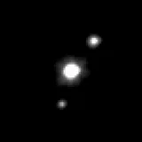
Hauméabing Makémakéwiki-fr
Makémakéwiki-fr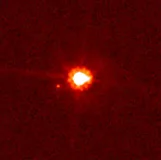
Éris (planète naine)bing Lunewiki-fr
Lunewiki-fr Phobosmemo:lunes
Phobosmemo:lunes Déimosmemo:lunes
Déimosmemo:lunes Iomemo:lunes
Iomemo:lunes Europe (lune)memo:lunes
Europe (lune)memo:lunes Ganymèdememo:lunes
Ganymèdememo:lunes Callistomemo:lunes
Callistomemo:lunes Titan (lune)memo:lunes
Titan (lune)memo:lunes Enceladememo:lunes
Enceladememo:lunes Rhéa (lune)memo:lunes
Rhéa (lune)memo:lunes Japetmemo:lunes
Japetmemo:lunes Dionémemo:lunes
Dionémemo:lunes Téthysmemo:lunes
Téthysmemo:lunes Mimasmemo:lunes
Mimasmemo:lunes Titaniamemo:lunes
Titaniamemo:lunes Obéronmemo:lunes
Obéronmemo:lunes Mirandamemo:lunes
Mirandamemo:lunes Arielmemo:lunes
Arielmemo:lunes Umbrielmemo:lunes
Umbrielmemo:lunes Tritonmemo:lunes
Tritonmemo:lunes Charon (lune)memo:lunes
Charon (lune)memo:lunes Nébuleuse d'Orionwiki-fr
Nébuleuse d'Orionwiki-fr Nébuleuse de la Tête de Chevalwiki-fr
Nébuleuse de la Tête de Chevalwiki-fr Nébuleuse du Crabewiki-fr
Nébuleuse du Crabewiki-fr Nébuleuse de l'Aiglewiki-fr
Nébuleuse de l'Aiglewiki-fr Nébuleuse de la Lyrewiki-fr
Nébuleuse de la Lyrewiki-fr Nébuleuse d'Helixbing
Nébuleuse d'Helixbing Nébuleuse de la Rosettewiki-fr
Nébuleuse de la Rosettewiki-fr Nébuleuse du Papillonwiki-fr
Nébuleuse du Papillonwiki-fr Nébuleuse de la Carènebing
Nébuleuse de la Carènebing Nébuleuse du Cônewiki-fr
Nébuleuse du Cônewiki-fr Sagittarius A*wiki-fr
Sagittarius A*wiki-fr M87*wiki-fr
M87*wiki-fr Cygnus X-1wiki-fr
Cygnus X-1wiki-fr TON 618wiki-fr
TON 618wiki-fr Gaia BH1wiki-fr
Gaia BH1wiki-fr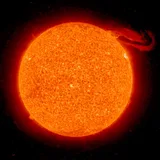
Soleilwiki-fr
Bételgeusebing
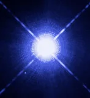
Siriusbing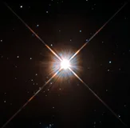
Proxima du Centaurewiki-fr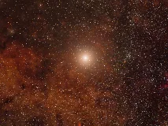
Alpha Centauriwiki-fr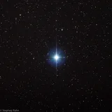
Végawiki-fr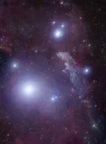
Rigelwiki-fr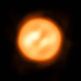
Antarèswiki-fr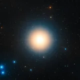
Aldébaranwiki-fr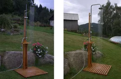
Arcturusbing
Denebbing
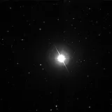
Altaïrwiki-fr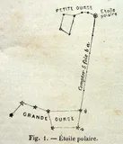
Étoile polairewiki-fr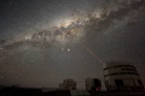
Voie lactéewiki-fr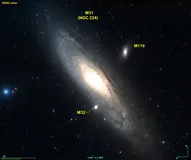
Galaxie d'Andromèdewiki-fr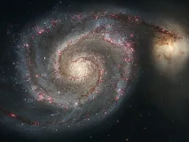
Galaxie du Tourbillonwiki-fr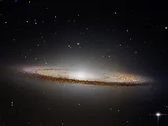
Galaxie du Sombrerowiki-fr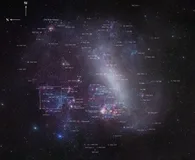
Grand Nuage de Magellanwiki-fr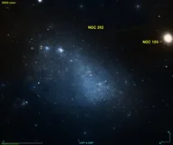
Petit Nuage de Magellanwiki-fr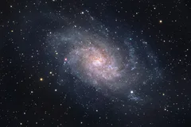
Galaxie du Trianglewiki-fr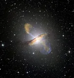
Centaurus Awiki-fr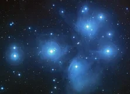
Pléiadeswiki-fr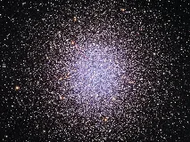
Amas d'Herculewiki-fr
Amas de la Viergebing
Ceinture d'astéroïdesbing
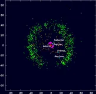
Ceinture de Kuiperwiki-fr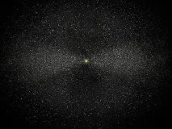
Nuage d'Oortbing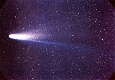
Comète de Halleywiki-fr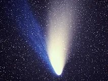
Comète Hale-Boppwiki-fr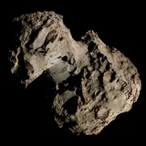
67P/Tchourioumov-Guérassimenkowiki-fr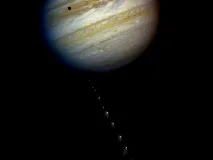
Shoemaker-Levy 9wiki-fr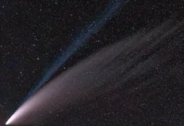
C/2020 F3 (NEOWISE)wiki-fr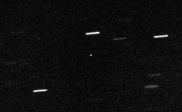
ʻOumuamuawiki-fr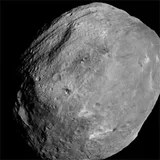
(4) Vestabing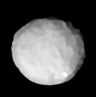
(2) Pallasbing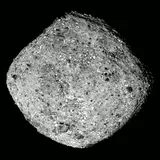
(101955) Bennuwiki-fr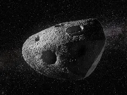
(99942) Apophisbing
(162173) Ryugubing
(90377) Sednabing
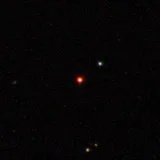
TRAPPIST-1wiki-fr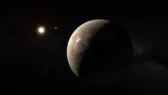
Proxima Centauri bwiki-fr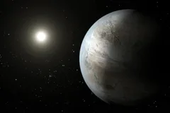
Kepler-452bwiki-fr
51 Pegasi bbing
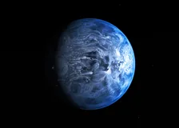
HD 189733 bwiki-fr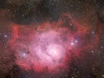
Nébuleuse de la Lagunewiki-fr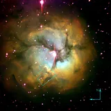
Nébuleuse Trifidewiki-fr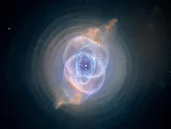
Nébuleuse de l'Œil de Chatwiki-fr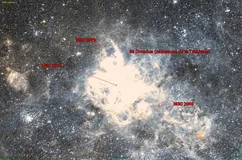
Nébuleuse de la Tarentulewiki-fr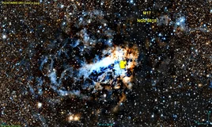
Nébuleuse Omégawiki-fr